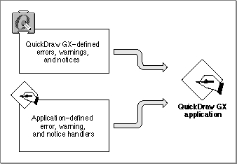

Legacy Document
Important: The information in this document is obsolete and should not be used for new development.
Important: The information in this document is obsolete and should not be used for new development.


About QuickDraw GX Errors, Warnings, and Notices
QuickDraw GX posts errors, warnings, or notices, depending upon the severity of the problem that was detected when your application was running. The three types of QuickDraw GX execution problems are
In addition to the posting of errors, warnings, and notices, QuickDraw GX supports application-defined error, warning, and notice handlers. You can use your own handlers or QuickDraw GX's errors, warnings, and notices either separately or together.
- Errors. QuickDraw GX posts errors whenever a function in your application is unable to execute. An error indicates that an operation cannot continue. Execution terminates at the nonexecutable function. When an error is posted inside a QuickDraw GX function, the function returns immediately with a function result (if any) of 0 or
nil.- Warnings. QuickDraw GX posts warnings whenever your application executes a function that doesn't provide the result that you expect. Execution continues internally, as if the warning had not been posted.
- Notices. QuickDraw GX posts notices to alert you to the fact that it has performed an unnecessary or redundant function. Execution continues as if the notice had not been posted. Graphics notices are posted only in the debugging version of QuickDraw GX.
To obtain errors, warnings, and notices, either check for QuickDraw GX errors, warnings, and notices or install your application's error, warning, and notice handlers. The use of error, warning, and notice handlers is a simple and efficient method of managing errors, warnings, and notices. Error handlers are described in the section "Installing an Error, Warning, or Notice Handler" beginning on page 3-38.
Figure 3-1 shows the relationship of the two problem-management approaches.
Figure 3-1 QuickDraw GX and application-defined error, warning, and notice management

There are two versions of QuickDraw GX.
To determine if the debugging or non-debugging version is installed, use the
- Non-debugging version. This version of QuickDraw GX is intended for debugged applications used by the end user. The number of QuickDraw GX errors and warnings is limited. Notices are not posted. This version of QuickDraw GX is smaller and faster than the debugging version.
- Debugging version. This version of QuickDraw GX is intended for developers that are writing and debugging new applications. This version provides an extensive set of QuickDraw GX errors, warnings, and notices to assist in debugging and optimizing the performance of your application. Special functions are provided to assist in the posting, utilization, and control of debugging errors.
Gestaltfunction described in the chapter "QuickDraw GX and the Macintosh Environment" in this book.QuickDraw GX posts most errors and warnings only in the debugging version.
The non-debugging version posts errors and warnings if the error could not be anticipated at compile time--for example, running out of memory or disk space. You should correct application problems that result in errors and warnings while developing your application. The non-debugging version does not include most of the errors and warnings that the debugging version provides.QuickDraw GX non-debugging and debugging errors are defined by the
gxGraphicErrorsenumeration given in the section "Errors" beginning on page 3-40. QuickDraw GX non-debugging and debugging warnings are defined by thegxGraphicWarningsenumeration given in the section "Warnings" beginning on page 3-48. QuickDraw GX debugging notices are defined by thegxGraphicNoticesenumeration given in the section "Notices" beginning on page 3-51.
Subtopics
- Non-Debugging Version
- Debugging Version